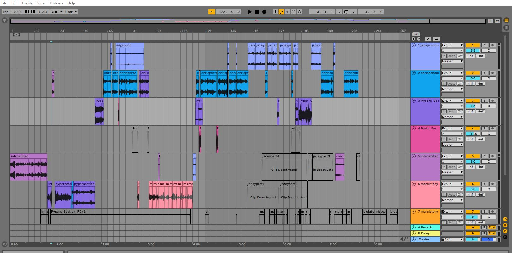

<!DOCTYPE html>
<html>
</html>
<head>
  <meta charset="utf-8">
  <meta http-equiv="X-UA-Compatible" content="IE=edge">
  <title><b>Chris</b> Rogers Bootstrap Portfolio</title>
  <meta name="description" content="">
  <meta name="viewport" content="width=device-width, initial-scale=1">
  <meta name="robots" content="all,follow">
  <!-- Bootstrap CSS-->
  <link rel="stylesheet" href="vendor/bootstrap/css/bootstrap.min.css">
  <!-- Font Awesome CSS-->
  <link rel="stylesheet" href="vendor/font-awesome/css/font-awesome.min.css">
  <!-- Google fonts - Roboto-->
  <link rel="stylesheet" href="https://fonts.googleapis.com/css?family=Roboto:400,300,700,400italic">
  <!-- owl carousel-->
  <link rel="stylesheet" href="vendor/owl.carousel/assets/owl.carousel.css">
  <link rel="stylesheet" href="vendor/owl.carousel/assets/owl.theme.default.css">
  <!-- theme stylesheet-->
  <link rel="stylesheet" href="css/style.default.css" id="theme-stylesheet">
  <!-- Custom stylesheet - for your changes-->
  <link rel="stylesheet" href="css/custom.css">
  <!-- Favicon-->
  <link rel="shortcut icon" href="img/favicon.png">
  <!-- Tweaks for older IEs--><!--[if lt IE 9]>
    <script src="https://oss.maxcdn.com/html5shiv/3.7.3/html5shiv.min.js"></script>
    <script src="https://oss.maxcdn.com/respond/1.4.2/respond.min.js"></script><![endif]-->
</head>
<body>
  <div id="all">
    <div class="container-fluid">
      <div class="row row-offcanvas row-offcanvas-left">
        <!--   *** SIDEBAR ***-->
        <div id="sidebar" class="col-md-4 col-lg-3 sidebar-offcanvas">
          <div class="sidebar-content">
            <h1 class="sidebar-heading"> <a href="index.html">Chris Rogers</a></h1>
            <p class="sidebar-p">I am a new web designer and programmer with more than 2 years of experience. </p>
            <p class="sidebar-p">Originally from California, currently based in Montana. </p>
            <ul class="sidebar-menu">
                <!-- Link-->
                <li class="sidebar-item"><a href="index.html" class="sidebar-link active">Home</a></li>
                <!-- Link-->
                <li class="sidebar-item"><a href="about.html" class="sidebar-link">About</a></li>
                <!-- Link-->
                <li class="sidebar-item"><a href="contact.html" class="sidebar-link">Get in touch</a></li>
            </ul>
            <p class="social"><a href="https://twitter.com/chrisrogers111" data-animate-hover="pulse" class="external twitter"><i class="fa fa-twitter"></i></a><a href="mailto:cr178001@umconnect.umt.edu" data-animate-hover="pulse" class="email"><i class="fa fa-envelope"></i></a></p>
            <div class="copyright text-center text-md-left">
              <p class="credit">&copy;2021 Chris Rogers | Template by <a href="http://bootstrapious.com/portfolio-themes" class="external">Bootstrapious.com</a></p>
              <!-- Please do not remove the backlink to us, unless you support the development at http://bootstrapious.com/donate. It is part of the license conditions. Thanks for understanding :)        -->
            </div>
          </div>
        </div>
        <!--   *** SIDEBAR END ***  -->
        <!--   *** DETAIL ***-->
        <div class="col-md-8 col-lg-9 content-column white-background">
          <div class="small-navbar d-flex d-md-none">
            <button type="button" data-toggle="offcanvas" class="btn btn-outline-primary"> <i class="fa fa-align-left mr-2"></i>Menu</button>
            <h1 class="small-navbar-heading"> <a href="index.html"><b>Chris</b> Rogers </a></h1>
          </div>
          <div class="row">
            <div class="col-xl-10">
              <div class="content-column-content">
                <h1>Biology 161 Podcast</h1>
                <p class="lead">This project was to create a 5-7 minute podcast about a science topic of our group's choosing.</p>
                <div id="main-slider" class="owl-carousel owl-theme">
                  <div class="item"></div>


                </div>
                <!-- /#main-slider-->
                <p>This project was for a biology lab. We had to script, record, and edit together a short 7-minute podcast about a science topic. My group chose screen time's influence on child development. We explored the fact that children who grow up with increased screen time have biological changes in their brains, as well as behavioral changes.</p>
                <ol>
                  <li>Audio editing and recording.</li>
                  <li>Teamwork to accomplish a unique deliverable.</li>
                </ol>
                <blockquote class="blockquote">
                  <p class="mb-0"><audio controls>

                        <source src="podcastfinal2.mp3" type="audio/mpeg">
                          Your browser does not support the audio element.
                        </audio></p>
                </blockquote>
                <h2>What I learned</h2>
                <p>
                  <ul>
                    This project taught me a lot about scripting and collaboratively writing with a group:
                    <li>Communication online in order to accomplish a task on a deadline.</li>
                    <li>Editing and mixing sound clips into a clear and concise podcast.</li>
                  </ul>
                </p>
                <details>
                  <summary>Transcript</summary>
                  <p>
                    <center>Podcast Script:</center>
<b>Chris</b> Rogers<br><br>
<b>Pyper</b> Trumble<br><br>
<b>Jacey</b> Staggs<br><br>

<i>[Intro music, 10 seconds]</i> <sub>(mark dunsmore- crop circles)</sub><br><br>

<b>Pyper</b>: Hello, and welcome to the Brain Childs Podcast! I’m your host, Pyper, a CSD and Psychology student working at the Development Lab, and with me are my fellow hosts…<br><br>

<b>Chris</b>: Hi I’m Chris. I am a computer science major and father<br><br>

<b>Jacey</b>: Hi! My name’s Jacey! I’m also a CSD student and I work at an after-school childcare program here in Missoula.<br><br>

-<br><br>

<b>Pyper</b>: Today we’re talking about the brain, children’s brains, and how screens are changing them. Whether that be for better or for worse. According to a 2010 study by Rideout, kids spend about seven hours a day in front of screens. Does that number surprise you? Well, let’s talk about that. But, first, let’s start off with a question… How much screen time do you get in a day?<br><br><sub> (Rideout, V. J., Foehr, U. G., & Roberts, D. F. (2010, Jan 01,). Generation M2: Media in the Lives of 8- to 18-Year-Olds. https://www.kff.org/other/poll-finding/report-generation-m2-media-in-the-lives/)</sub><br><br>

<i>[street style narration, “Hi, quick question, how much time per day do you spend looking at a screen?”, insert various audio clips of answers]</i><br><br>

-<br><br>

<b>Chris</b>: So to start, what is the normal biological process?<br><br>

<b>Pyper</b>: There are many aspects of normal brian development and it is all rapid. In an article called Reopening Windows: Manipulating Critical periods for brain development they defined critical periods as “the time when environmental input are required for the proper development of a particular brain circuit” and Sensitive periods are “ less stringent than a critical period, and is the time when environmental experiences have the greatest impact on brain circuitry”<br><br><sub>(Hensch, T. K., & Bilimoria, P. M. (2012). Re-opening Windows: Manipulating Critical Periods for Brain Development. Cerebrum: The Dana Forum on Brain Science, 2012 https://www.ncbi.nlm.nih.gov/pmc/articles/PMC3574806/).</sub><br><br>

<b>Chris</b>: Do you have any examples?<br><br>

<b>Pyper</b>: Take Language development, this is a sensitive period from birth to about 5 that is maximal for learning a language, but as long as you learn the basis of language you can continue to learn languages at a much slower rate. Whereas critical periods are like the ability to see. The ability to see begins at 8 months and is fully formed by age 3, which is a shorter period than language. If it is not allowed to grow then the brain will allocate those brain regions to other things and vision will never be achieved.<br><br>


To understand more brain development we will see it in the context of studies focusing on the effects of screen time. Let's start with EEG results.<br><br>

[<b>Chris</b>’s section]<br><br>

<b>Chris</b>: The first one I'd like to talk about is a study called “Screen-exposure and altered brain activation related to attention in preschool children: An EEG study” Michal Zivan et al.<br><br>

<b>Jacey</b>: What's EEG?<br><br>

<b>Chris</b>: So EEG stands for Electroencephalogram, which is a word that means, the measurement of brain function interpreted as waves.<br><br>

<b>Pyper</b>: Waves?<br><br>

<b>Chris</b>: Ya like sound waves except these are brain waves.<br><br>

<i>{sound of EEG starts playing}</i> <sub>(https://www.youtube.com/watch?v=IOnxNq3EQyU&t=40s)</sub><br><br>

<b>Chris</b>: So the study took preschool kids who have either received a story from a screen or a story read to them by an adult. The children were scanned after the intervention, and their brain activity was measured. What they found was that kids who got read to by a screen, had the same EEG signature as children who were diagnosed with ADHD. The kids who had an adult read to them didn’t.<br><br><sub> (Zivan, M., Bar, S., Jing, X., Hutton, J., Farah, R., & Horowitz-Kraus, T. (2019). Screen-exposure and altered brain activation related to attention in preschool children: An EEG study. Trends in Neuroscience and Education, 17, 100117. https://10.1016/j.tine.2019.100117)</sub><br><br>

<b>Chris</b>: Can you say testing?<br><br>

<b>Marci</b>: Testing<br><br>

<b>Chris</b>: That's my daughter Marci. I read her a book, asked some questions about it, then played a youtube reading of a different book by the same author and asked questions. Just to see if I could glean a similar amount of information between the two methods.<br><br>

	<b>Chris</b>: Okay! So can you introduce yourself? What's your name?<br><br>
	<b>Marci</b>: Marci <br><br>
	<b>Chris</b>: Alright I’m gonna read you a story<br><br>
	<b>Marci</b>: Is it the Mouse ate a Cookie?<br><br>
	<b>Chris</b>: It might be. If you give a mouse a cookie<br><br>
	<i>(forward winding sound)</i><br><br>
	<b>Chris</b>: He is going to want a cookie to go with it.<br><br>
<b>Marci</b>:It goes back to the cookie<br><br>
	<b>Chris</b>: Oh no it goes back to the cookie. Whatcha think?<br><br>
	<b>Marci</b>: Good<br><br>
	<b>Chris</b>: Good? Can you tell me some of the things that happened in the story?<br><br>
	<b>Marci</b>: The mouse ate a cookie two times.<br><br>
	<b>Chris</b>: He ate two cookies, yeah. And this part I am going to have you watch a video, okay?<br><br>
<i>(starts video)
	(includes Marci’s interruptions and questions)</i><br><br>
	(end of video questions and answers)<br><br>
	<b>Marci</b>: Why is there a moose?<br><br>
	<b>Chris</b>: I don’t know you are going to have to watch the video.<br><br>
	<b>Marci</b>: The mom is probably asking why there is a moose in my house.<br><br>
	<b>Chris</b>: What did you think of that book or reading?<br><br>
	<b>Marci</b>: The same as the other<br><br>
	<b>Chris</b>: Oh they are both the same. What are some things that you remember?<br><br>
	<b>Marci</b>: I forgot.<br><br>
	<b>Chris</b>: You forgot? That's okay, that's fine. Thank you for helping me today. Want to say bye?<br><br>
	<b>Marci</b>: Bye bye<br><br>


<b>Jacey</b>: Ok, so there is a functional difference when it comes to screens. Are there any physical ones?<br><br>

<b>Chris</b>: Yes, actually. You’re familiar with what an fMRI is?<br><br>

<i>{MRI sounds}</i><sub> (https://www.youtube.com/watch?v=6Aj2QspPf7s&t=1144s)</sub><br><br>

<b>Pyper</b>: ya, it's like a video of thinking.<br><br>

<b>Chris</b>: Right, it basically measures and displays blood flow to areas of the brain, which is correlated with what the person is thinking or doing. So we have a study that took MRI’s of kids brains called “Brain connectivity in children is increased by the time they spend reading books and decreased by the length of exposure to screen-based media”<br><br> <sub>(Horowitz-Kraus, T., & Hutton, J. S. (2018). Brain connectivity in children is increased by the time they spend reading books and decreased by the length of exposure to screen-based media. Acta Paediatrica, 107(4), 685-693. https://10.1111/apa.14176)</sub><br><br>

<b>Pyper</b>: Sounds more like a conclusion.<br><br>

<b>Chris</b>: It basically is, it's from Acta Paediatrica in 2017, and what they did is take parental reported screen times, then screen and balance the kids for neuro normal, and graphed that data.<br><br>

<b>Jacey</b>: So what'd they find, if the title didn’t give it away.<br><br>

<b>Chris</b>: What they found was that kids with higher screen time had fewer neural connections to certain parts of their brain than kids who had higher reading times.<br><br>

<b>Jacey</b>: Which parts?<br><br>

<i>[ background MRI sound starting low, crescendo to end of this section]</i><br><br>

<b>Chris</b>: the parts of their brain that have to do with Wernicke’s area, basically the part of the temporal lobe, just behind your ears, that does processing for speech and written language. Kids who read have higher connections to that area of the brain.<br><br>


[<b>Jacey</b>’s section]<br><br>

<b>Jacey</b>: So, as Chris mentioned, thanks to our advancements in today’s technology, it has been physically observed that screen time can affect the developing brain. But let’s dive in and take a look at some more of the specifics.<br><br>

<b>Jacey</b>: With a little bit of digging I found that multiple studies taken by Zhou, Yuan, and Weng between 2011 and 2013 have actually shown atrophy, or otherwise shrinkage, to the brain’s gray matter makeup with excessive screen time, especially on computers. <br><br><sub>(Zhou, Y., Lin, F., Du, Y., Qin, L., Zhao, Z., Xu, J., & Lei, H. (2011). Gray matter abnormalities in Internet addiction: a voxel-based morphometry study. European Journal of Radiology, 79(1), 92-95. https://10.1016/j.ejrad.2009.10.025)</sub><br><br>

<b>Chris</b>: I don’t know about you, but I think that sounds pretty alarming.<br><br>

<b>Jacey</b>: I agree! So, what’s the matter with the matter? See what I did there? Sorry, bad joke.<br><br>

<b>Jacey</b>: Well, when we take a look at this in depth, the gray matter areas of the brain, including the frontal lobe, are essential for humans’ executive function.<br><br>

<b>Pyper</b>: Sort of like the powerhouse of information processing?<br><br>

<b>Jacey</b>: Exactly. And more specifically, that area handles important skills such as planning, organizing, and prioritizing, all of which, in a sense, helps us “get things done.” When development to this area is negatively impacted, it can result in spontaneous brain activity and poor task performance in real world situations.<br><br>

<b>Chris</b>: That doesn’t sound very ideal.<br><br>

<b>Jacey</b>: And not only that, these activities, especially playing video games that tend to be more violent in nature, have also been linked to damaging the insula.<br><br>

<i>[violent video game sounds]</i><sub> (https://www.youtube.com/watch?v=DIq3oYYJlqM&t=86s)</sub><br><br>

<b>Pyper</b>: So, now let’s take a step back. As we’ve learned, excessive screen time has been shown to impair the structure and function of young developing brains, which typically undergo massive changes through childhood, especially during puberty and continuing into our late twenties.<br><br>

<b>Jacey</b>: Development in such essential areas are important for success in so many areas of life, whether that be academic performance, future career success, and relationship skills with others and one’s own self.<br><br>

<b>Pyper</b>: So, what do you think we do about this with the information we’ve been given?<br><br>

<b>Chris</b>: Screens are here to stay, for better or worse they will have a hand in shaping how we interact and learn, but knowing their limitations and the dangers and pitfalls, especially in early development will help us as a species. Hopefully this new awareness can help guide our choices as we move forward.<br><br>

<b>Jacey</b>: That’s all we have for you guys today. Thanks for tuning in!<br><br>

<i>[insert music, fade out]</i><sub> (mark dunsmore - crop circles)</sub><br><br>

<b>Chris</b>: Sources for the Brain’s Child Podcast includes:<br><br>
Minds on Media “Engagement to developing brains”<br><br>
WzySci<br><br>
UCSF Dept. of Psychiatry and Behavioral Sciences.<br><br>
Andrew Scott.<br><br>
Music: Mark Dunsmore<br><br>

References<br><br>
<code>Andrew Scott. (2012, July 14th).  Sensitive vs Critical periods of learning - VCE Psychology [Video]. Youtube. https://www.youtube.com/watch?v=ytRC15vIA24<br><br>
Hensch, T. K., & Bilimoria, P. M. (2012). Re-opening Windows: Manipulating Critical Periods for Brain Development. Cerebrum: The Dana Forum on Brain Science, 2012 https://www.ncbi.nlm.nih.gov/pmc/articles/PMC3574806/<br><br>
Horowitz-Kraus, T., & Hutton, J. S. (2018). Brain connectivity in children is increased by the time they spend reading books and decreased by the length of exposure to screen-based media. Acta Paediatrica, 107(4), 685-693. https://10.1111/apa.14176<br><br>
Rideout, V. J., Foehr, U. G., & Roberts, D. F. (2010, Jan 01,). Generation M2: Media in the Lives of 8- to 18-Year-Olds. https://www.kff.org/other/poll-finding/report-generation-m2-media-in-the-lives/<br><br>
Zhou, Y., Lin, F., Du, Y., Qin, L., Zhao, Z., Xu, J., & Lei, H. (2011). Gray matter abnormalities in Internet addiction: a voxel-based morphometry study. European Journal of Radiology, 79(1), 92-95. https://10.1016/j.ejrad.2009.10.025<br><br>
Zivan, M., Bar, S., Jing, X., Hutton, J., Farah, R., & Horowitz-Kraus, T. (2019). Screen-exposure and altered brain activation related to attention in preschool children: An EEG study. Trends in Neuroscience and Education, 17, 100117. https://10.1016/j.tine.2019.100117<br><br> </code>


                  </p>
                </details>
              </div>
            </div>
          </div>
        </div>
      </div>
    </div>
  </div>
  <!-- JavaScript files-->
  <script src="vendor/jquery/jquery.min.js"></script>
  <script src="vendor/popper.js/umd/popper.min.js"> </script>
  <script src="vendor/bootstrap/js/bootstrap.min.js"></script>
  <script src="vendor/jquery.cookie/jquery.cookie.js"> </script>
  <script src="vendor/owl.carousel/owl.carousel.min.js"></script>
  <script src="vendor/masonry-layout/masonry.pkgd.min.js"></script>
  <script src="js/front.js"></script>
</body>
